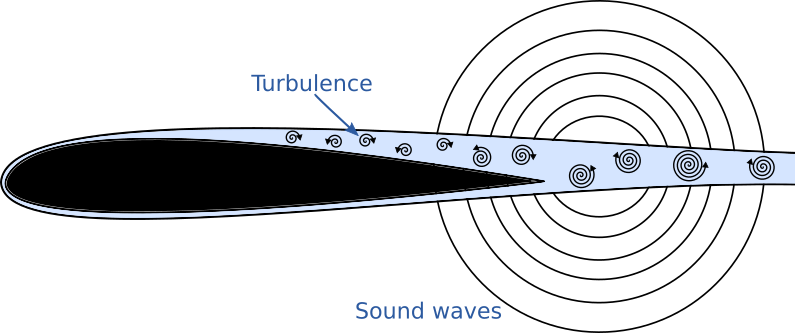
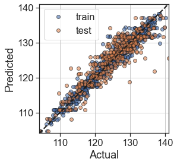
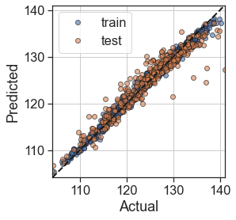
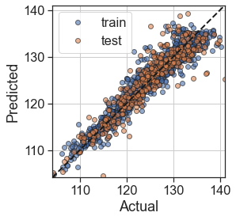

Machine learning of airfoil self-noise with interpretable polynomial trees¶
The NASA data set comprises different size NACA 0012 airfoils at various wind tunnel speeds and angles of attack.

UCI Machine Learning repository
Feature |
Description |
Units |
|---|---|---|
\(f\) |
Frequency |
Hz |
\(\alpha\) |
Angle of attack |
Degrees |
\(U_{\infty}\) |
Free-stream velocity |
m |
\(C\) |
Airfoil chord length |
m/s |
\(\delta^*\) |
Suction side boundary layer thickness |
m |
Output is SPL, the scaled sound pressure level, in decibels.
In [2]:
import numpy as np
import equadratures as eq
import pandas as pd
import matplotlib.pyplot as plt
random_state = 4
data = pd.read_csv('https://archive.ics.uci.edu/ml/machine-learning-databases/00291/airfoil_self_noise.dat',delimiter='\t',
names=['Frequency','AoA','Chord','Velocity','Thickness','spl'])
y = data.spl.to_numpy()
X = data.drop('spl',axis = 1).to_numpy()
X_train, X_test, y_train, y_test = eq.datasets.train_test_split(X, y, train=0.75, \
random_seed=random_state)
In [3]:
# Define a helper scorer/plotting function
def test_model(model):
ypred_train = model.predict(X_train)
ypred_test = model.predict(X_test)
fig, ax = plt.subplots()
ax.plot(y_train,ypred_train,'o',alpha=0.6,mec='k',label='train')
ax.plot(y_test,ypred_test,'o',alpha=0.6,mec='k',label='test')
ax.plot([np.min(y_test),np.max(y_test)],[np.min(y_test),np.max(y_test)],
'k--',zorder=10,lw=2)
ax.set_aspect(1)
ax.set_xlabel('Actual')
ax.set_ylabel('Predicted')
ax.set_xlim([np.min(y_test),np.max(y_test)])
ax.set_ylim([np.min(y_test),np.max(y_test)])
ax.grid('on')
ax.legend()
plt.show()
print('Training MAE = %.2f' %(eq.datasets.score(y_train,ypred_train,'mae')))
print('Test MAE = %.2f' %(eq.datasets.score(y_test,ypred_test,'mae')))
In [4]:
from sklearn.tree import DecisionTreeRegressor
DT = DecisionTreeRegressor(criterion='mse',max_depth=10,
min_samples_leaf=2,random_state=random_state)
DT.fit(X_train,y_train)
test_model(DT)

Training MAE = 1.10
Test MAE = 2.23
In [5]:
from sklearn.ensemble import RandomForestRegressor
# Random forest with fully grown trees
RF = RandomForestRegressor(n_estimators=100,criterion='mse',max_depth=None,
random_state=random_state)
RF.fit(X_train,y_train)
test_model(RF)

Training MAE = 0.50
Test MAE = 1.42
In [6]:
order = 3 #or deeper tree with order=1
max_depth = 3
tree = eq.PolyTree(splitting_criterion='loss_gradient', max_depth=max_depth,
order=order, poly_method='elastic-net',
poly_solver_args={'max_iter':20,'verbose':False,'alpha':1.0,'nlambdas':20,
'crit':'CV'})
tree.fit(X_train,y_train)
test_model(tree)

Training MAE = 1.49
Test MAE = 1.94
References¶
[1]: Brooks, T. F., Pope, D. S., and Marcolini A. M. (1989), Airfoil self-noise and prediction. Technical report, NASA RP-1218.
In [ ]: